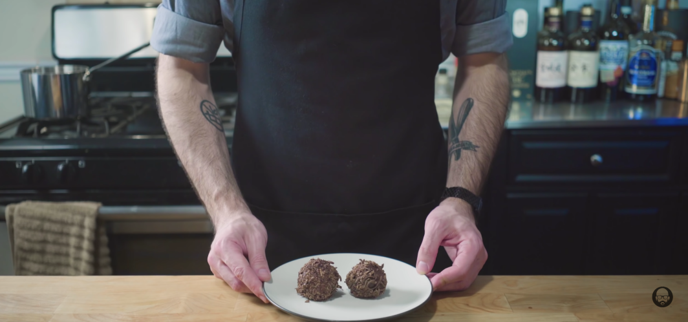

Chef's Salty Chocolate Balls

Food Description
After a long day of cooking savory dishes a nice dessert is something that always crosses our minds.
This recipe has you covered as we explore the world of Chef's Chocolate Salty Balls. This dessert is best described
as a burst of flavors that will satisfy a salty and sweet tooth as this dish blends the wonderful flavors of
salt and chocolate that will leave everyone satisfied.
Ingredients
Chef's Salty Chocolate Ball's Ingredients
- 1 Stick of Butter, Cubed
- 2 Cups Sugar
- 3 Whole Eggs
- 1 Cup Flour
- 1/2 Cup Unsweetened Cocoa Powder
- 1 1/2 tsp Baking Powder
- 1 1/2 tsp Kosher Salt
- 1/2 tsp Vanilla Extract
- 1/2 Cup Buttermilk
- 1/4 Cup Vegetable Oil
- 8 Ounces Chocolate
- 1/2 Cup Whole Milk
Steps
For Salty Chocolate Balls
- Place a stick of butter, cubed, into a the bowl of a stand mixer with 2 cups of sugar, and mix on high for 2 minutes. Crack 3 whole eggs and cream together with the butter and sugar on a high speed until creamy.
- In a separate bowl, combine 1 cup of flour, ½ cup of unsweetened cocoa powder, and 1 ½ tsp each of baking powder and kosher salt. Whisk together before slowly adding to the mixture in the stand mixture on a low speed.
- As that comes together we’re going to add ½ tsp vanilla extract, ½ cup buttermilk, and ¼ cup vegetable oil.
- Once those are added, turn mixer back on to a high speed for 2-3 minutes or until light and fluffy.
- Oil the inside of a cake pan, fill it with the cake batter, smooth out the top, and bake at 350°F for 35-40 minutes or until set and no longer jiggling.
- While cake cools, we’re going to melt 8 ounces of chocolate in a double boiler. Pour chocolate onto a sheet pan and spread it out until smooth. Freeze for 10 minutes or until it has lost its sheen.
- Use a lemon zester, scrape the chocolate off of the pan, creating some short and curly chocolate curls. Place in a bowl and toss with some cocoa powder. Place in freezer until we’re ready to use them.
- In the meantime we’re going to scrape our cooled cake into a mixing bowl. Adding ½ cup of whole milk, adding more milk if necessary until we reach a dough-y consistency. We will then shape them into chocolate balls and place on a parchment lined baking sheet.
- Coat balls in molten chocolate and roll in the bowl of chocolate curlies.